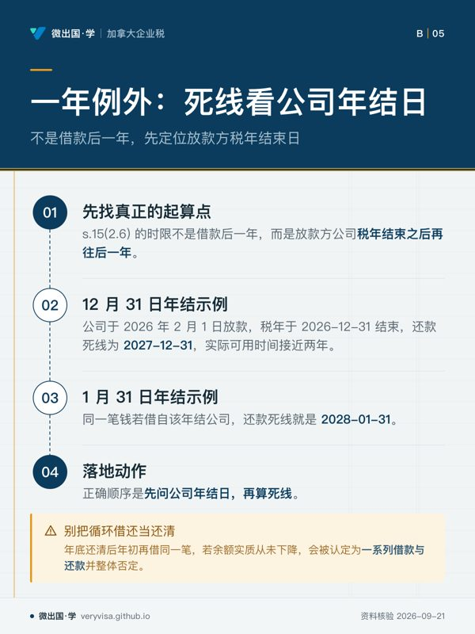
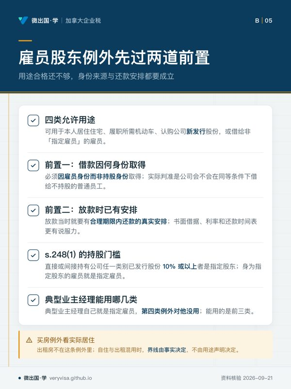
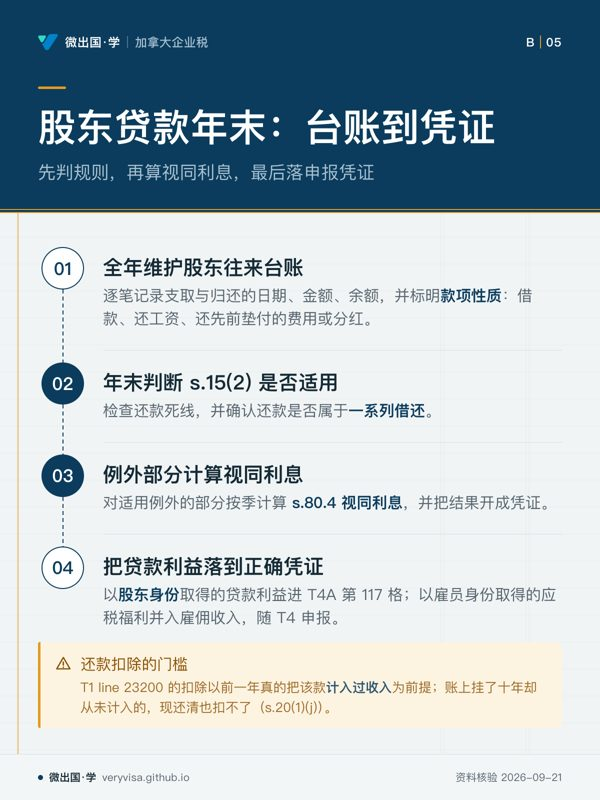

核实日期：2026-09-05｜现行口径：2026 税年｜复核：2027-01-31（本页更新最快的一格是规定利率，每季度重新公布一次；表格版次与终身资本利得豁免额每年 1 月同步） 法条依据指向《所得税法》(Income Tax Act, ITA) 现行合订本（Act current to 2026-06-21）；数值与表格版次指向加拿大税务局 (Canada Revenue Agency, CRA)、加拿大公司局 (Corporations Canada) 与卑诗省注册处的现行页面。
ca-corporate-01-t2-intro-sbd 讲公司自己交多少税，ca-corporate-03-salary-vs-dividend 讲利润怎么发给你。这一页处理的是剩下那一大类：钱和资产在公司与股东之间来回搬的时候，税法怎么看。四件事——从公司借钱（ITA s.15(2)、s.80.4）、把资产搬进公司（s.85）、投进去的钱赔光了怎么抵（ABIL）、公司不做了怎么收摊（s.88(2) 与解散）——分别落在 T1 的 line 23200 与 line 21700、单独递交的 T2057、以及最后一张 T2 的第 078 行上。读完这页你应该能做到三件事：判断一笔股东借款要不要在借款那年全额计入个人收入，并算出低息部分的视同利息利益；说清 s.85 选举金额的上限、下限与拿票据（boot）的代价；把一家小公司从"决定不做了"到"营业号关闭"的顺序排对，不把最贵的那一步顺序做反。
一、制度设计与底层逻辑：一个人，两个纳税主体
1.1 公司是独立的人，所以"自己给自己"这句话在税法上不成立
业主经理最难扭过来的一个观念是：公司不是你的钱包，它是一个独立的纳税主体，有自己的税年、自己的申报表、自己的账。你和它之间的每一笔往来——借钱、转资产、投钱、分钱、清盘——在税法上都是两个人之间的交易，都要各自定性、各自计税。四件事的全部技术细节，都是从这一句推出来的。
推论之一：从公司拿钱出来，只有三条合法路径，走哪条决定了税怎么算。第一条是工资（公司可扣，个人按雇佣收入交税）；第二条是分红（公司不可扣，个人按股息交税，靠毛额化与抵免做整合）；第三条是还钱（公司把欠你的钱还给你，双方都不产生所得）。借款不是第四条路——它只是把问题往后推，而税法专门写了一条规则堵住这个推法。
1.2 股东贷款：立法者堵的到底是什么
如果借钱不计税，业主经理的最优解会变成：一辈子不发工资、不派息，每年从公司"借"生活费，账上挂一笔越滚越大的股东欠款，永不归还。公司这边不用扣缴、个人这边不用申报，一整套个人所得税就这么消失了。
所以 ITA s.15(2) 给出的答案非常粗暴：股东（以及与股东有关联的人）从公司拿到的贷款本金，在收到贷款的那个纳税年度直接计入个人收入（加拿大联邦法规库）。注意它计的是本金，不是利息，也不是利差——这是一条反规避规则，不是一条计价规则，所以它的力度远远超出直觉。
粗暴的规则必须配例外，否则正常的商业行为会被误伤。s.15(2.2) 到 s.15(2.6) 一共五条例外，业主经理真正用得上的是两条：放款那个公司税年结束后一年内还清，且这次还款不属于"一系列借与还"中的一环（s.15(2.6)，加拿大联邦法规库）；以及雇员-股东为了特定用途借的款（s.15(2.4)）。另外三条分别处理以放贷为常业者在通常业务过程中的放款、非居民之间的债务与特定信托安排，与业主经理关系不大，用到时回条文原文核。
1.3 利息那一层：为什么还要有第二条规则
堵住了本金，还剩一个漏洞：真的在一年内还清的那些借款，等于白用了公司的钱一年。所以 s.80.4 补了第二刀——低息或无息借款，按规定利率算出的那笔"你本该付而没付的利息"，也是一项应税利益（加拿大联邦法规库）。

两条规则的关系写在 s.80.4(3)(b)：同一笔钱不会被打两次。本金已经按 s.15(2) 计入收入的贷款，不再另算视同利息利益（加拿大联邦法规库）。这句话的实务含义是：一笔借款先判 s.15(2) 走不走得掉例外，走得掉才轮到 s.80.4 出场；走不掉的话，本金已经全额计税，利息那一层就不用再算了。
1.4 s.85：为什么法律愿意让你不交税
前面两件事是"堵"，s.85 是"放"。逻辑是：一个自雇木工把自己的工具、客户合同和存货装进一家新公司，他手里的经济利益一点没变——资产从"直接持有"变成了"通过持有股份间接持有"，只是换了个法律外壳。如果这一刻就按公平市值视同处置、把多年积累的增值一次性课税，那么"该不该公司化"这个纯商业决定会被税收扭曲，很多本该发生的重组不会发生。
所以 s.85 允许双方联合选举一个介于税基与公平市值之间的转让价，把增值递延到将来真正变现的那一天。代价是四个硬条件必须同时成立：受让方是应税加拿大公司、转让的是合格财产、对价必须包含该公司的股份、双方共同在期限内选举（加拿大联邦法规库）。少一个，整个递延就不成立，按公平市值课税。
1.5 ABIL：给失败开的一个口子
资本损失的常规待遇是"只能抵资本利得"。这条通则对小企业投资人特别不友好：你把一辈子的积蓄投进一家本地小公司，公司倒了，损失只能等到你将来卖出别的增值资产时才抵得掉；而你可能这辈子都没有别的资本利得。
营业投资损失 (business investment loss, BIL) 就是给这种情况开的口子：小企业公司的股份或债权上的资本损失，其可扣部分（ABIL）可以拿去抵任何收入——工资、生意利润、养老金都行（加拿大联邦法规库、CRA）。政策意图很直白：鼓励人把钱投给在加拿大真正做生意的小公司，输了国库陪你分担一半。
也正因为待遇特别好，它被三道闸门夹着：小企业公司的定义很严（s.248(1)）、与终身资本利得豁免互相冲减（s.39(9) 与 s.110.6）、结转期比普通亏损短（s.111）。这三道闸门是本节技术含量最高的地方，第二节逐条展开。
1.6 清算：国库要的是排在你前面的位置
公司一旦被注销，就没有主体可以再向它追税了。所以 ITA s.159(2)(3) 把顺序钉死：法定代表人在把公司财产分给股东之前，必须先向部长申请并取得清税证明书；没取得就分了钱的，在已分配财产价值的范围内自己掏腰包赔上公司欠的税、利息与罚金（加拿大联邦法规库）。
这是整页里法律后果最重的一条，也是最容易被顺序做反的一条。清盘的人多半是公司的董事，同时也是拿钱的股东——先把钱分了再去补手续，是最自然的动作，也是最贵的动作。
1.7 做错了会怎么样
四件事的错法与后果各不相同，值得先列清楚：股东贷款漏报，CRA 复评时把本金整笔加回借款年的收入，补税之外还有利息，而且当年该扣的税没扣，公司这边还有源头扣缴的责任；s.85 选举迟报，最长可以补到三年内，代价是罚金（s.85(7)、(8)），超过三年就要部长酌情同意，不是当然受理（s.85(7.1)，加拿大联邦法规库）；ABIL 报错最常见的不是罚款而是"白报"——不符合小企业公司定义的股份被当成 ABIL 抵了普通收入，复评时改判成普通资本损失，那些年抵掉的工资税全部补回；清算做错顺序，则是上一节说的个人责任。
二、2026 税年现行规则与数字
2.1 股东贷款：一年例外怎么数，才不会数错
s.15(2.6) 的时限不是"借款后一年"，是放款方（公司）那个税年结束之后再往后一年（加拿大联邦法规库）。所以同一天借的钱，公司年结日不同，还款死线可以差出十一个月：
一家 12 月 31 日年结的公司，2026 年 2 月 1 日放款，公司的这个税年在 2026-12-31 结束，还款死线是 2027-12-31——借款人实际有将近两年时间。同一笔钱如果借自一家 1 月 31 日年结的公司，税年在 2026-01-31 之后的下一个年结（2027-01-31）结束，死线就是 2028-01-31。先问公司年结日，再算死线，是这一条唯一不容易错的做法。
第二个陷阱在"一系列借与还"上。条文明确写了：还款要能被证明不是一系列借款与还款中的一环（加拿大联邦法规库）。年底还清、次年年初再借出同一笔钱，形式上每笔都在一年内还清，实质上余额从没下降过——这种安排会被整体否定，本金照样计入收入。CRA 在个人扣除那一侧也埋了同一条口径：属于一系列借还的，还款年只能扣当年债务余额的净减少额，而不是还款的面值（CRA）。
2.2 雇员-股东的四类专属例外：先过两道前置
s.15(2.4) 给雇员身份的股东留了四类用途：购买供本人居住的住宅、购买履行职务所需的机动车、认购公司新发行的股份、以及借给非"指定雇员"的雇员（加拿大联邦法规库）。
四类都要先过两道前置条件，缺一不可：一是这笔借款因雇员身份而非持股身份取得——同等条件下公司会不会借给一个不持股的普通员工，是这道题的实际判准；二是放款当时就已有在合理期限内还款的真实安排，有书面借据、利率、还款时间表最好，事后补的说明说服力有限（加拿大联邦法规库）。
"指定雇员"这个门槛卡在 s.248(1)：直接或间接持有公司任一类别已发行股份 10% 或以上的人是指定股东，身为指定股东的雇员就是指定雇员（加拿大联邦法规库）。所以第四类例外对典型的业主经理没用——他自己就是指定雇员；他能用的是前三类。
⚠️
买房那一条不看你借去买什么房，看它是不是给"你自己住"
条文写的是取得供本人居住的住宅（加拿大联邦法规库）。借公司的钱去买一套用来出租的房子，不在这条例外里；买第二套自住与出租混用的房子，界线由事实决定，不由用途声明决定。
2.3 视同利息利益怎么算：三列表一（规定利率逐季值）
计算式只有一句话：按规定利率、逐段乘以该段实际未偿余额，算出全年利息，减去在日历年结束后 30 天内实际支付的利息，差额计入收入（加拿大联邦法规库）。三个细节决定算得对不对：利率按季变、余额按天变、抵减的利息必须在次年 1 月 30 日之前真的付掉。
| 期间 | 2024 税年（考试口径那一学年的背景值） | 2025 税年 | 2026 税年（现行） | 状态 |
|---|---|---|---|---|
| 第一季度（1–3 月） | 6.0% | 4.0% | 3.0% | 已生效 |
| 第二季度（4–6 月） | 6.0% | 4.0% | 3.0% | 已生效 |
| 第三季度（7–9 月） | 5.0% | 3.0% | 3.0% | 已生效 |
| 第四季度（10–12 月） | 5.0% | 3.0% | 3.0% | 已生效 |
| 全年能否用单一年率 | 不能，年中降过一次 | 不能，年中降过一次 | 可以，四季同为 3% | — |
这张表是本页最有价值的一格。2026 税年恰好四个季度同值，于是"用一个年率乘一遍"这种偷懒算法今年碰巧不会算错——而 2024 与 2025 都会算错。碰巧对，不等于方法对；这个率每季度重新公布一次，明年可能又变。凡是把 3% 写死进模板的算法，都会在它变动的那一季静默出错。
购房与搬迁类借款另有两条特殊规则：利率以放款当时的规定利率封顶，之后规定利率涨了也不跟涨（s.80.4(4)）；期限超过五年的，第五年末的余额视同一笔新的购房贷款，重新按那一刻的规定利率锁一次（s.80.4(6)，加拿大联邦法规库）。所以这类借款在利率下行期不划算——锁的是高利率；在利率上行期反而占便宜。
ℹ️
借来的钱如果拿去赚收入，视同利息可能反手扣回来
视同利息利益在特定条件下会被当作"已支付的利息"处理，从而按利息扣除的一般规则去抵它所产生的收入。这条不在 s.80.4 本身，落在紧邻的另一条上；本页不展开，用到时回条文核。
2.4 s.85：上限、下限，与拿了票据的代价
选举金额（elected amount）不是随便填的数，它被夹在一个区间里：
上限＝所转让财产的公平市值。填得比公平市值高，法律直接视同就是公平市值（s.85(1)(c)，加拿大联邦法规库）。想借高填价格把成本做上去，做不到。
下限＝所收非股份对价（boot）的公平市值。填得比 boot 低，法律直接视同就是 boot 的公平市值（s.85(1)(b)，加拿大联邦法规库）。这一条是整个 s.85 里最需要背下来的：你从公司拿走多少现金或票据，就至少要在这个数上确认收益。存货与非折旧资本财产另受 s.85(1)(c.1) 的"公平市值与税基取小"下限约束；折旧资产还有自己的一套下限规则，本页不展开。
于是"零税负转让"的配方就出来了：把 boot 控制在所转资产的税基以内，选举金额填等于税基。此时选举金额既不低于 boot、又不高于公平市值，转让方确认的收益为零，而增值全部通过股份的低成本基础递延下去。boot 一旦超过税基，超出部分立刻变成当年的应税收益。
对价里必须有股份，哪怕只有一股（加拿大联邦法规库）。同时 s.85(2.1) 会把新发股份的实缴资本 (paid-up capital, PUC) 压到"选举金额减去 boot"的水平——税法不允许你用一次递延转让凭空创造出可以免税取回的 PUC。这条削减在多年以后清算或减资时才显出威力，届时能免税取回的本金就是这个被压低后的数。
合格财产的边界记一条就够用：存货里的不动产不是合格财产（加拿大联邦法规库）。房地产开发商手里当存货持有的地块，不能用 s.85 转进公司。
期限与罚金：选举必须在双方各自报税截止日中最早的那一天之前完成（s.85(6)）。转让方是个人（截止日 4 月 30 日或 6 月 15 日）、受让公司是 6 月 30 日年结（截止日为年结后六个月），取最早的那个。迟报三年内属可补范围（s.85(7)），罚金是两个数取小：(公平市值 − 选举金额) × 0.25% × 月数，以及 $100 × 完整月数、封顶 $8,000（s.85(8)，加拿大联邦法规库）。超过三年就落到 s.85(7.1) 的部长酌情里，不再是当然受理。
✕
罚金的第一档挂在"填低了多少"上，不挂在"晚了多久"上
(公平市值 − 选举金额) × 0.25% × 月数这一档，选举金额填得越低、罚金基数越大。一笔公平市值 $2,000,000、选举金额填 $100,000 的转让，仅这一档每月就是 $4,750，两个月就把 $8,000 那一档顶穿——最终取小，罚满 $8,000。"反正封顶八千"这句话只对小额转让成立。
2.5 ABIL：三道闸门与三列表二
第一道闸门是小企业公司 (small business corporation, SBC) 的定义：加拿大受控私人公司，且绝大部分资产的公平市值（实务口径约 90%）用于在加拿大主要经营的活跃业务（s.248(1)，加拿大联邦法规库）。这里有一条对现实很友好的宽限：判 ABIL 时，只要处置前 12 个月内的任何一个时点符合小企业公司定义就行——公司倒闭前把设备卖光、账上只剩现金，并不会因此让 ABIL 泡汤（加拿大联邦法规库）。
第二道闸门是触发处置的方式：要么是 s.50(1) 的视同处置选举，要么是与非关联方的真实处置（s.39(1)(c)，加拿大联邦法规库）。把烂股份"卖"给自己的配偶不产生 ABIL。
第三道闸门是与终身资本利得豁免 (lifetime capital gains exemption, LCGE) 的双向冲减。往前看：以前年度用掉的豁免额，按两倍冲减本年的营业投资损失（s.39(9)，加拿大联邦法规库）。往后看：本年认列的 ABIL 会压低 s.110.6 的年度利得限额与累计利得限额，将来卖合格小企业公司股份时可用的豁免额同样减少（加拿大联邦法规库）。这两条是同一件事的两个方向：国库不允许同一块钱既享豁免、又抵普通收入。
| 项目 | 2024 税年（考试口径） | 2025 税年 | 2026 税年（现行） | 状态 |
|---|---|---|---|---|
| 资本利得纳入率 | 考试口径写 2024-06-25 起 66.67% | ½ | ½（加拿大联邦法规库） | 考试口径那一版从未生效，提案已撤销 |
| ABIL 占营业投资损失的比例 | 实际仍是 ½ | ½ | ½（CRA） | 已生效；CRA 写成"乘以当年纳入率"而非写死 50% |
| 终身资本利得豁免额 | $1,016,836（6-25 前）／$1,250,000（6-24 后） | $1,250,000 | $1,275,000（CRA） | 已生效，2026 恢复指数化 |
| 对应的扣除限额（豁免额 × ½） | — | $625,000 | $637,500（换算） | 已生效 |
这张表里藏着本课最大的单点错误：考试口径整套按 66.67% 纳入率推导的算法，在任何一个税年都没有生效过。凡是拿考试口径例题练 ABIL 计算的人，答案会系统性偏大三分之一。现行一律用 ½。
结转期是最后一个坑。普通非资本亏损可以往前抵 3 年、往后结转 20 年；而由 ABIL 形成的那一部分只能结转 10 年，第 10 年之后没用掉的，转成净资本亏损（s.111，加拿大联邦法规库）。转过去之后可以无限期结转，但从此只能抵应税资本利得，再也不能抵工资或经营收入——ABIL 最值钱的那个特权，第十年之后自动消失。
s.50(1) 的选举让你在不卖掉的前提下把一笔投资清零：在当年的报税表里选举，即视同以零对价处置、并在年末之后立即以零成本重新取得（加拿大联邦法规库）。股份要满足四个条件，且必须在年末同时成立：公司资不抵债、公司及其控制的公司都已停止经营、股份公平市值为零、且可合理预期公司将被解散或清算而不会重新开业（加拿大联邦法规库）。债权那一侧的条件不同，判的是"该笔债在本年内成为坏账"。
⚠️
触发年份只有一年，而且经常已经过去了
这四个条件是在某一个年末同时成立的，成立的那一年就是唯一可以选举的年份。公司 2023 年停业、2024 年被债权人申请清算，到 2026 年才想起来报 ABIL——正确年份早就过去了，只能走迟报选举那条路（s.220(3.2)，窗口是税年结束后十个日历年，罚金为 $8,000 与 $100 × 完整月数取小，加拿大联邦法规库）。
2.6 清算：三步算清楚股东手上的税
第一步，s.84(2) 的视同股息。 清算分配中超过该类别股份实缴资本的部分，全额视同一笔股息（加拿大联邦法规库）。这一步用的是 PUC——公司层面按类别平均的数，不是你个人的调整成本基础 (adjusted cost base, ACB)。
第二步，把视同股息从处置对价里剔出去，再算股份的资本利得或损失。 不剔的话同一笔钱会被课两次税。剔完之后，股份处置对价往往正好等于 PUC；如果你当初买股份花的钱高于 PUC（例如从别人手里溢价买来的），差额在这一步变成资本损失。PUC 与 ACB 分道扬镳，是清算算错的头号原因。
第三步，把能免税的部分从视同股息里切出来。 资本股息账户 (capital dividend account, CDA) 余额以内的那部分清算股息，被视同一笔独立的股息，可以单独对它作 s.83(2) 的资本股息选举，不必另行宣派（s.88(2)，加拿大联邦法规库）。选举成功，这部分股东不计入收入（加拿大联邦法规库）。
s.88(2) 另外两个后果要一并记住：为计算资本股息账户等科目，视同税年在清算前一刻结束；分给股东的每一项财产按公平市值视同处置，公司当年要认收入回收、折旧回收与资本利得（加拿大联邦法规库）。所以"把车和电脑直接过户给股东"不是零税事件，公司要按市值认收入。
两条时限是硬的。资本股息选举必须在股息应付日当天或之前（或首次实际支付日，孰早）作出，且必须就股息全额选举（加拿大联邦法规库）——公司一旦被注销就不存在了，没有主体可以再作这个选举，所以 CDA 必须在注销之前用掉。选举金额超过 CDA 余额的部分，公司要缴 3/5 的第三部分税；救济是在超额评税通知书发出后 90 天内再作一次选举，把超额部分改按应税股息处理（s.184，加拿大联邦法规库）。宁可少报也不要多报，是这一条唯一安全的做法。
三、实务流程：表、行号、凭证与顺序
3.1 股东贷款：一份台账胜过事后解释
公司这边全年维护一份股东往来台账：每笔支取与归还的日期、金额、余额，以及每笔的性质（借款、还工资、还先前垫付的费用、分红）。年末做三件事：判 s.15(2) 是否适用（看死线与是否属一系列借还）；对适用例外的部分按季算 s.80.4 视同利息；把结果开成凭证。
凭证落点：股东以股东身份取得的贷款利益，个人这一侧对应的是 T4A 第 117 格（贷款利益）（CRA）；以雇员身份取得的应税福利并入雇佣收入，随 T4 申报。还款那一年，个人在 T1 line 23200（其他扣除） 把当年归还、且先前确曾按 s.15(2) 计入过收入的部分扣回来（s.20(1)(j)，加拿大联邦法规库、CRA）。
🔧
扣除挂在"曾经计入过"上，不挂在"还了钱"上
line 23200 这个扣除的前提是前一年真的把它计入过收入。有些账上挂了十年的股东欠款，当年从没有人把它加进个人收入，现在还清了也扣不了——不是漏报的对冲，是两件独立的事（加拿大联邦法规库）。
3.2 s.85：T2057 是一张与 T2 分开走的表
T2057 由转让方与受让公司联合填报（现行版次 t2057-25e，页面 2026-03-13 更新，CRA）。三个实务要点：它不随 T2 一起递交，是单独递交的一张表；合伙企业向公司转让另用别的表号，本页只处理最常见的这一张；截止日取双方申报期限中最早的那一个，不是取转让方自己的（加拿大联邦法规库）。
配套文件里有两样容易被省掉、事后又最救命的：一份写明标的、对价构成与选举金额的买卖协议；协议里的一条价格调整条款——如果 CRA 事后否定了你对公平市值的估值，这条条款让对价自动跟着调整，从而避免"选举金额低于 boot"这类连锁后果。转让固定资产、存货、应收账款、商誉时，每一类资产各有各的选举金额，表上按类别分行填，不是整包填一个数。
3.3 ABIL：先做选举，再报两行
个人报 ABIL 的落点是两行：line 21699 填营业投资损失的毛额、line 21700 填可扣部分（CRA）。随报一份说明，内容 CRA 列得很细：小企业公司名称、股份类别与数量或债权类型、资不抵债/破产/清算的日期、取得日期、处置对价、调整成本基础、处置费用与亏损金额（CRA）。
顺序是：先确认触发年份 → 在该年的报税表里作 s.50(1) 选举（如果走的是视同处置这条路）→ 算 BIL → 按 s.39(9) 扣掉以前用过的豁免额的两倍 → 剩下的乘 ½ 得 ABIL → 填两行 → 附说明。说明不是可选项：没有它，CRA 几乎必然发信要材料，而那时候公司往往已经注销、记录已经散掉。
⚠️
无息借给自己公司的钱，损失可能一开始就被削成零
资本损失的一般规则里有一条：为非赚取收入目的而取得的债权，其损失按零计算。业主经理无息借钱给自己的公司，字面上不产生利息收入，所以要主张 ABIL，就必须说清这笔钱是为了保住某一项收入来源（例如公司未来的股息或你自己的雇佣收入）。有书面借据、有商业理由的记录，与什么都没有，在这一步差别极大。这条限制不在 s.39 里，用到时回条文与相关判例核。
3.4 清算与解散：这一段的价值全在顺序上
① 股东决议（联邦要特别决议，卑诗省要普通决议）
② 变现资产、还清债务、注销合同
③ 报最后一张 T2：第 078 行勾"是"，税年结束日 ＝ 解散日
④ 用 TX19 申请清税证明书，附三份材料
⑤ 收到清税证明书
⑥ 才开始把剩余财产分给股东（此时才作 CDA 选举）
⑦ 用 RC145 关闭营业号下各程序账户
第 ③ 步：最后一张 T2 在第 078 行答"是"，解散日以解散条款/解散证书上的日期为准（T4012 第一章，CRA）。
第 ④ 步的三份材料：董事或股东决议（确认解散意图与日期）、最终 T2 的评税通知书（须包含显示资产如何分配的 Schedule 100 资产负债表信息）、以及截至清算日的资产分配表与分配方案（CRA）。TX19 现行版次是 tx19-26e（页面 2026-06-01 更新）——这张表今年刚换过版（CRA）。
第 ⑤⑥ 步之间那条线就是 s.159(2)(3) 的执法点：拿到证书之后才能开始分财产（CRA、加拿大联邦法规库）。
第 ⑦ 步的内部顺序也是定的：先把工资源头扣缴缴清、报完最后一批信息申报并把 T4/T4A 发给前雇员，再关 GST/HST 账户，最后凭解散证书与 RC145（现行版次 rc145-19e，CRA）关公司税账户（CRA）。
✕
没解散、或解散了没通知，公司在税务上就还活着
CRA 说得很直白：没有向注册机关申请解散的公司，税务上视为仍然存在，每年仍要报 T2——哪怕一分钱税都不用交（CRA）。这是小公司收摊最常见的烂尾形态：生意 2019 年就停了，账户没关、公司没注销，七年后想申请个人贷款时才发现名下挂着一家欠了七年申报的公司。
四、联邦之外：卑诗省怎么走
解散的门槛，联邦与卑诗省不一样。 联邦《加拿大商业公司法》(Canada Business Corporations Act, CBCA) 要特别决议授权；卑诗省《商业公司法》(Business Corporations Act, SBC 2002 c.57) 第 10 部第 2 分部的自愿解散只要普通决议（Corporations Canada (ISED)、BC Registries and Online Ser…）。同一句"股东同意解散"，在两个法域下要过的票数门槛不同。
卑诗省的自愿解散另加两个前提：公司没有资产，且没有负债、或已为每一笔负债作出充分安排；董事宣誓的宣誓书存入公司记录办公室而不是随申请递交（BC Registries and Online Ser…）。程序上，解散申请通过省注册处的在线系统电子提交，生效时点可以选在提交当时，也可以选在提交日之后不超过十天内某一日的太平洋时间 0:01；公司还必须处于良好存续状态才能提交（BC Registries and Online Ser…）。那个"不超过十天"的窗口在实务上很有用——它让你把公司的法律存续日与税年结束日对齐到一个方便的日子。
联邦这一侧：有财产或负债的公司，可以先清算完再申请解散，也可以先领意向解散证书（提交意向声明表格）再清算，最后在线提交解散条款换取解散证书；两张证书都不收申报费；已破产的公司不能自愿解散（Corporations Canada (ISED)）。
ℹ️
考试口径印的表号与现行不符
考试口径在解散流程里给出的两个表号是 4019 与 4017。现行的加拿大公司局商业公司解散指南用的是意向声明表（Form 19）与解散条款（Form 17）（Corporations Canada (ISED)）。4019/4017 这组号码在现行商业公司解散指南里找不到，疑似属于加拿大公司局另一部法下的表系（待核）。按现行指南上的表号走，别照考试口径填。
其余税务后果不因省而异：视同股息、CDA、清税证明书都是联邦规则，卑诗省的省税跟着联邦应税收入走，具体税率见 ca-corporate-01-t2-intro-sbd。
五、历史变革：这一页的规则里，哪些动过
资本利得纳入率那一场未遂改革，把 ABIL 也拖下了水。 2024 年 4 月的预算提案要把纳入率从 ½ 提到 2/3，拟议 2024-06-25 生效；2025 年 1 月推迟到 2026-01-01；随后撤销。ITA s.38(a) 的现行合订本里只有 ½，条文根本没被改过去（加拿大联邦法规库）。因为 ABIL 是"营业投资损失 × 当年纳入率"，纳入率若真的改成 2/3，ABIL 会一夜之间变成损失的 2/3——这也是 CRA 把它写成公式而不写死 50% 的原因（CRA）。考试口径是在提案已按拟议执行、尚未撤销的那个窗口里付印的，所以它教的是一套从未生效的算法。
终身资本利得豁免则是真的动了。 2024 上半年 $1,016,836、2024-06-25 起 $1,250,000（这一项直到 2026-03-26 才随预算实施法案正式成法）、2026 年恢复指数化后 $1,275,000（CRA）。对 ABIL 的影响是直接的：豁免额涨了，与之互抵的额度也跟着涨。处置日期比金额更关键——2024-06-20 与 2024-06-30 两笔同样的处置，可用豁免额相差二十三万。
规定利率的这一轮下行，从 2024 年初的 6% 一路降到 2025 年下半年的 3%，并在 2026 全年保持 3%（本页 2.3 三列表）。它没有改任何规则，但把股东借款的成本改变了一倍：同样一笔 $100,000 的无息借款，在 2024 上半年的口径下一年产生 $6,000 的视同利息利益，2026 税年只有 $3,000。考试口径例题里的利率背景值是过时的，算法不过时。
六、案例
案例一：借钱装修自住房（示例人物：列治文的陈女士）
陈女士全资持有一家 12 月 31 日年结的公司，本人在公司领工资、担任唯一董事。2026 年 3 月 1 日她从公司支取 $80,000 装修自住房，无息，年内没有归还，2027 年 11 月全额还清。
第一步判 s.15(2)：放款发生在公司 2026 税年内，该税年 2026-12-31 结束，一年例外的死线是 2027-12-31。她在死线前还清，且这是唯一一笔支取，不属于一系列借还——本金 $80,000 不计入 2026 年的收入。
第二步判 s.80.4：本金既然没有按 s.15(2) 计入收入，视同利息利益就要算（加拿大联邦法规库）。2026 税年四个季度均为 3%（CRA（1、2）），未偿期为 3 月 1 日至年末共 306 天：$80,000 × 3% × 306/365 ≈ $2,012。她若在 2027 年 1 月 30 日之前实际向公司支付这笔利息，可以把利益抵为零；不付，$2,012 计入 2026 年收入。
第三步看那条例外能不能用：s.15(2.4) 里"购买供本人居住的住宅"指的是取得住宅，装修不在其中；何况她持股 100%，是指定雇员，第四类例外也用不上。结论：例外用不上，靠的是一年内还清这条路。
假如她把还款拖到 2028 年 1 月，结果完全不同：$80,000 全额计入 2026 年的收入（不是 2027 年），补税加利息，2028 年还款那年才能在 line 23200 扣回来（加拿大联邦法规库）。两年之间的税率差与现金流差，全部由她承担。
案例二：把个体户装进公司（示例人物：素里的赵先生）
赵先生做了八年装修承包，一直以自雇身份报 T2125（见 ca-business-01-t2125-self-employment）。2026 年他决定公司化（是否值得，见 ca-business-05-incorporate-or-not）。他手上要转进公司的是：工具与设备（公平市值 $60,000，未折旧资本成本 $22,000）、存货（公平市值 $30,000、成本 $30,000）、自建的客户名册与商誉（公平市值 $90,000，税基为零）。合计公平市值 $180,000，税基合计 $52,000。
他想从公司拿一张 $52,000 的票据出来（将来公司有钱了免税还给他），其余对价拿股份。
选举金额按类别分别填，合计 $52,000：设备填 $22,000、存货填 $30,000、商誉填 $0。boot 合计 $52,000 恰好等于税基合计，每一类的选举金额都不低于分配到该类的 boot，也都不高于公平市值——转让当年确认的收益为零（加拿大联邦法规库）。
如果他贪心，把票据开到 $80,000：超出税基的 $28,000 部分把选举金额顶上去（下限＝boot 的公平市值），当年立刻产生 $28,000 的应税收益，其中商誉那一块还要按其自身规则定性。多拿的这 $28,000 不是免费的现金，是提前实现的收益。
新发股份的 PUC 会被 s.85(2.1) 压到"选举金额减 boot"，本例为零。这意味着将来公司清算时，他能免税取回的股份本金是零——所有回流都要走视同股息那条路（本页 2.6）。递延不是免除，它只是把税挪到了以后，并且把挪走的部分记在了 PUC 这个账上。
期限：他个人的 2026 年报税截止日是 6 月 15 日（有自雇收入），公司若选 2027-05-31 为首个年结日，其申报截止日是 2027-11-30。取最早的那个：2027-06-15。T2057 必须在那之前联合递交（CRA）。
案例三：收摊（示例人物：温哥华的林先生）
林先生的咨询公司 2026 年停止营业。清算前的账面：现金 $300,000（已变现所有资产、还清所有债务）；他持有的普通股 PUC 为 $1,000，他自己的 ACB 是 $61,000（当年从一位退出的合伙人手里溢价买了一半股份）。公司的 CDA 余额 $40,000（来自往年卖掉一处物业的免税那一半）。另外，他早年借给公司 $50,000 周转，公司还不上了。
股东侧第一步，视同股息：$300,000 − $1,000 ＝ $299,000 视同股息（s.84(2)，加拿大联邦法规库）。
第二步，切出免税部分：其中 $40,000 在 CDA 余额以内，视同一笔独立股息，作 s.83(2) 选举后不计入收入（加拿大联邦法规库（1、2））。剩下 $259,000 按非合资格股息计税（毛额化与抵免见 ca-corporate-03-salary-vs-dividend）。选举必须在这笔股息应付日当天或之前作出，且必须赶在公司注销之前。
第三步，算股份的资本损益：处置对价 $300,000 减去视同股息 $299,000 ＝ $1,000；ACB $61,000 → 资本损失 $60,000。这就是 PUC 与 ACB 分家的后果：他溢价买股份的那六万，在这一步才回来，而且只能是资本损失。
股东贷款那 $50,000：公司是小企业公司、他与公司是关联方，所以要走 s.50(1) 视同处置选举（加拿大联邦法规库），在四个条件同时成立的那个年末作。营业投资损失 $50,000，若他从未用过终身资本利得豁免，则 s.39(9) 无冲减，ABIL ＝ $50,000 × ½ ＝ $25,000，填 line 21699 与 line 21700，可抵他当年的任何收入（CRA）。
若他 2019 年曾用掉 $30,000 的豁免额，则按 s.39(9) 冲减 $60,000，$50,000 的营业投资损失被削成零——那笔损失退回普通资本损失，只能抵资本利得（加拿大联邦法规库）。恰好本例还有 $60,000 的股份资本损失可以合并考虑。先查历年豁免使用记录，再决定 ABIL 报多少，顺序不能反。
顺序：股东决议 → 变现与清偿（已完成）→ 最后一张 T2（第 078 行勾"是"）→ TX19 附三份材料 → 拿到清税证明书 → 才把 $300,000 分出来、同时作 CDA 选举 → RC145 关户（CRA（1、2））。他若在拿到证书之前就把钱分了，作为法定代表人要在 $300,000 的范围内对公司未缴税款个人负责（加拿大联邦法规库）。
七、常见错报与自查清单
一、用"借款日 + 一年"算还款死线。 正确的起点是放款公司那个税年的结束日，再往后一年（加拿大联邦法规库）。识别法：凡是没先问公司年结日就报出死线的，一定错。
二、年底还清、年初再借。 形式上每笔都在一年内还清，实质上余额从未下降，会被按一系列借还整体否定；个人扣除那一侧也只认当年债务余额的净减少额（CRA）。识别法：看余额曲线，不看单笔流水。
三、用一个年率乘一遍算视同利息。 规定利率按季度公布，2024 与 2025 都在年中变过（本页 2.3）。识别法：算式里只出现一个百分数，就是错的——除非该税年四季同值，而这要逐季核过才知道。
四、s.85 的 boot 拿超过税基。 超出部分当年立刻变成应税收益（加拿大联邦法规库）。识别法：把所有非股份对价加总，与所转资产的税基合计比一次；超了就是收益。
五、拿考试口径的 66.67% 纳入率算 ABIL。 现行一律 ½，那套算法从未生效（加拿大联邦法规库）。识别法：任何出现 66.67% 或 2/3 纳入率的算式，直接作废重算。
六、忘了 ABIL 只能结转 10 年。 第 10 年之后未用掉的部分转成净资本亏损，从此只能抵资本利得（加拿大联邦法规库）。识别法：看亏损年份，超过十年的余额不要再按"可抵任何收入"规划。
七、先分钱、后办清税证明书。 法定代表人在已分配财产价值范围内个人承担公司欠税（加拿大联邦法规库）。识别法：问一句"证书拿到了吗"，没拿到就一分钱都不能分。
八、CDA 留到公司注销之后。 公司不存在就没有主体可以作 s.83(2) 选举，账上那笔免税额度直接作废（加拿大联邦法规库）。识别法：解散日程表里必须有一行写着"分配前完成资本股息选举"。
九、以为解散了就不用报税了。 没通知 CRA、没关营业号的公司，税务上仍然存在，年年都要报 T2（CRA）。识别法：手里有没有解散证书，以及 RC145 有没有交。
十、照考试口径上的表号填现行表。 表号会换版（TX19 现行 tx19-26e，T2057 现行 t2057-25e，联邦解散用意向声明表与解散条款而非考试口径印的 4019/4017）。识别法：填表前先看一眼官方表格页上的版次后缀。
练习题见本板块题库（122）。
八、术语双语表
| English | 中文 | 一句机制 |
|---|---|---|
| shareholder loan | 股东贷款 | 股东从公司借的钱；本金默认计入借款年收入（ITA s.15(2)） |
| deemed interest benefit | 视同利息利益 | 低息/无息借款按规定利率算出的利息，减去年后 30 天内实付的部分（s.80.4） |
| prescribed rate | 规定利率 | CRA 每季度公布的计税利率；2026 税年四季均为 3% |
| specified shareholder | 指定股东 | 直接或间接持有任一类别已发行股份 10% 及以上的人（s.248(1)） |
| specified employee | 指定雇员 | 身为指定股东的雇员，或与公司非关联交易的雇员；被排除在雇员贷款例外之外 |
| series of loans and repayments | 一系列借款与还款 | 借还相扣、余额不降的安排；例外与扣除都会被整体否定 |
| section 85 rollover | 第 85 条转让 | 向应税加拿大公司转让财产时联合选举转让价，递延增值 |
| eligible property | 合格财产 | s.85(1.1) 圈定的可转让财产；存货中的不动产不在其中 |
| elected amount | 选举金额 | T2057 上填的转让价；上限为公平市值，下限为 boot 的公平市值 |
| boot (non-share consideration) | 非股份对价 | 股份以外的对价（现金、票据、承担的债务）；它决定选举金额的下限 |
| paid-up capital (PUC) | 实缴资本 | 公司层面按股份类别平均的税务本金；可免税取回的上限 |
| adjusted cost base (ACB) | 调整成本基础 | 股东个人层面的税务成本；与 PUC 不是一回事 |
| business investment loss (BIL) | 营业投资损失 | 小企业公司股份或债权上的资本损失（s.39(1)(c)） |
| allowable business investment loss (ABIL) | 可扣营业投资损失 | BIL × 当年纳入率（现行 ½）；可抵任何收入，填 line 21699 / 21700 |
| small business corporation (SBC) | 小企业公司 | CCPC 且绝大部分资产用于在加拿大主要经营的活跃业务（s.248(1)） |
| lifetime capital gains exemption (LCGE) | 终身资本利得豁免 | 2026 税年 $1,275,000；与 ABIL 双向冲减 |
| subsection 50(1) election | 第 50(1) 条选举 | 不卖出也能把坏账或无价值股份视同以零对价处置 |
| non-capital loss | 非资本亏损 | 可抵任何收入的亏损；前抵 3 年、后转 20 年，ABIL 部分只转 10 年 |
| net capital loss | 净资本亏损 | 只能抵应税资本利得；无限期结转 |
| winding-up | 清算 | 变现资产、清偿债务、把剩余分给股东的过程（s.88(2)） |
| deemed dividend | 视同股息 | 清算分配中超过 PUC 的部分，按股息课税（s.84(2)） |
| capital dividend account (CDA) | 资本股息账户 | 记录可免税分配额度的税务账户；分配需作 s.83(2) 选举 |
| clearance certificate | 清税证明书 | 分配财产前必须取得；未取得者个人承担公司欠税（s.159(2)(3)） |
| legal representative | 法定代表人 | 清算人、遗嘱执行人、董事等代为处置财产的人 |
| articles of dissolution | 解散条款 | 换取解散证书的申请文件；联邦与省的表号不同 |
| special resolution / ordinary resolution | 特别决议／普通决议 | 联邦解散要前者，卑诗省自愿解散要后者 |
| T2057 | 第 85 条选举表 | 转让方与公司联合填报，与 T2 分开单独递交 |
| TX19 | 清税证明书申请表 | 遗产、企业、财产三类共用；现行版次 tx19-26e |
| RC145 | 关闭营业号程序账户申请表 | 拿到最终评税通知书之后用它关户 |
| line 078 (T2) | T2 第 078 行 | 最终申报勾选栏；税年结束日 ＝ 解散日 |
| T4A box 117 | T4A 第 117 格 | 贷款利益；还款年在 T1 line 23200 反向扣除 |
本页知识卡
不看正文也能拿到这一节的核心内容：先看导读，再看图。点图放大，左右翻页。
- 先看先抓避税路径，再看法律为什么把取出的本金当期纳入。
- 易漏法定例外不止两项，经营者常碰到的主要集中在两类。
- 下一步去练习，用一笔公司借款判断是否先落入收入规则。

- 先看先比较两个示例的起算结构，不要从拿钱那天顺推。
- 易漏账面清零后很快借回，仍可能被视作同一套循环安排。
- 下一步去练习，给定公司年结日后自己推出最后还款日。

- 先看先把用途清单与资格门槛分开读，再看两项前置是否同时成立。
- 易漏高持股员工会卡在人员定义；住房用途还取决于真实居住事实。
- 下一步去知识卡，把自己的用途、持股比例和还款文件逐项对照。

- 先看按工作顺序读：先把往来记全，再判断、计息，最后归入申报凭证。
- 易漏个人侧能否扣回取决于历史处理，不取决于今天是否已经还钱。
- 下一步去练习，用一份往来记录把每笔款项分到对应申报位置。